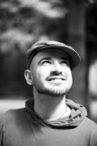

U. Rıfat Karlova
1980 senesinde İzmit’te doğdu. İlköğretim hayatını memleketleri olan Tekirdağ’ın Hayrabolu ilçesinde tamamladı. Ortaokulu Tekirdağ Özel Lisesi’nde bitiren Karlova, liseyi aynı şehirde Anadolu Turizm Otelcilik Lisesi’nde okudu. 1998 senesinde Mersin Üniversitesi Anamur Meslek Yüksek Okulu Almanca Turizm bölümünü kazandı ve 2001’de bu bölümden mezun oldu. 2002 senesinde Ankara Üniversitesi DTCF Sinoloji (Çince) Bölümü’ne girdi. 2006 senesinde mezun olduktan sonra Tayvan hükümetinden almış olduğu yüksek lisans bursu ile Tayvan’a gitti. Ulusal Tayvan Normal Üniversitesi’nde 1 sene Çince eğitimi aldıktan sonra aynı okulda Siyaset Bilimi bölümünde yüksek lisans yaptı. 2009 senesinde Taypey Sanat Üniversitesi’nde senaryo ve oyunculuk dersleri de alan Karlova, 2006 senesinde girmiş olduğu Tayvan eğlence dünyasındaki başarılarıyla tanındı. Karlova Çince oynadığı tek kişilik oyunlar ve televizyon programları ile Çinli izleyicilerin beğenisini kazandı. Dizi filmler, sahne şovları ve sinema filmi gibi projelerde de yer bulan Karlova, Asya’daki en etkili yabancıların arasında yer almakta ve hâlen Ulusal Tayvan Normal Üniversitesi Eğitim Bölümünde doktorasını yapmaktadır.
Okurların yorum, öneri ve eleştirileri için:
cmtyolculuk@yahoo.com.tw